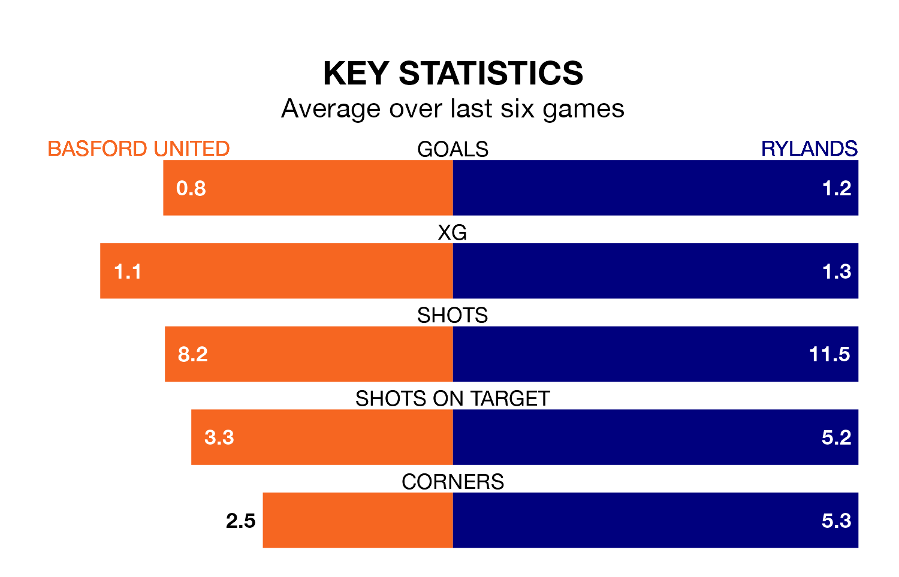

Basford United host Rylands on Saturday at Greenwich Avenue in Northern Premier League.
In their last league match, on January 20, Basford lost to Ilkeston Town 4-1 away.
Rylands drew, 2-2 away at Workington.
Rylands are second in the table after 26 games, of which they have won 13 and drawn 10, earning 49 points.
Basford are 16 places behind the away side in 18th, with five wins and seven draws putting them on 22 points.
With 28 goals in 28 games so far this season, United are scoring at below the league average rate with 1.0 goals per game. But they are conceding fewer than average too, letting in 46 goals at a rate of 1.6 per game.
Rylands are also below average scorers, with 1.6 goals per game, compared to a league average of 1.7. They have conceded 1.0 goal per game.
The hosts are in disappointing form in Northern Premier League, with two wins and four losses from their last six games.
With a win and four draws over that period, Rylands's form is slightly better – they have taken seven points from 18, compared to Basford's six.
Updated: 09:18 (UTC), 23/01/24